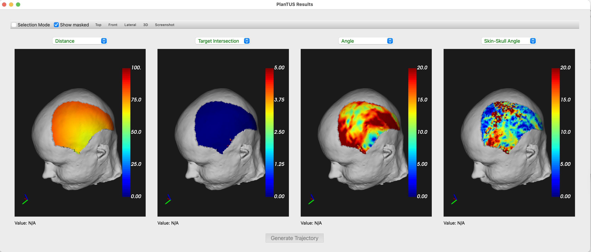
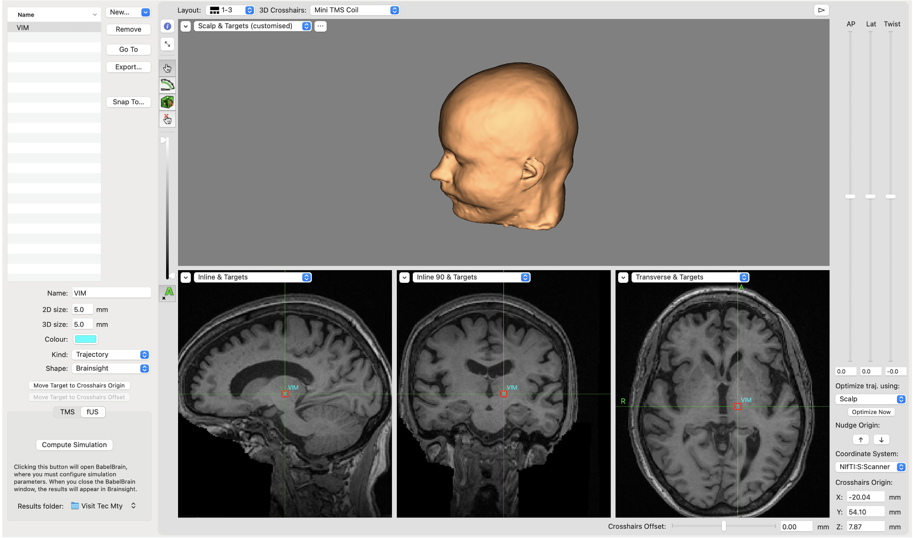
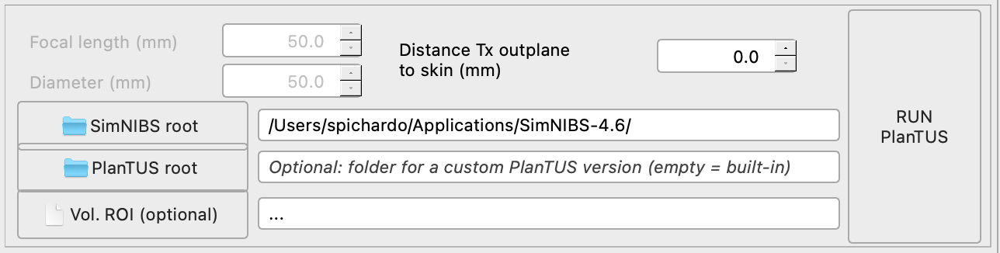
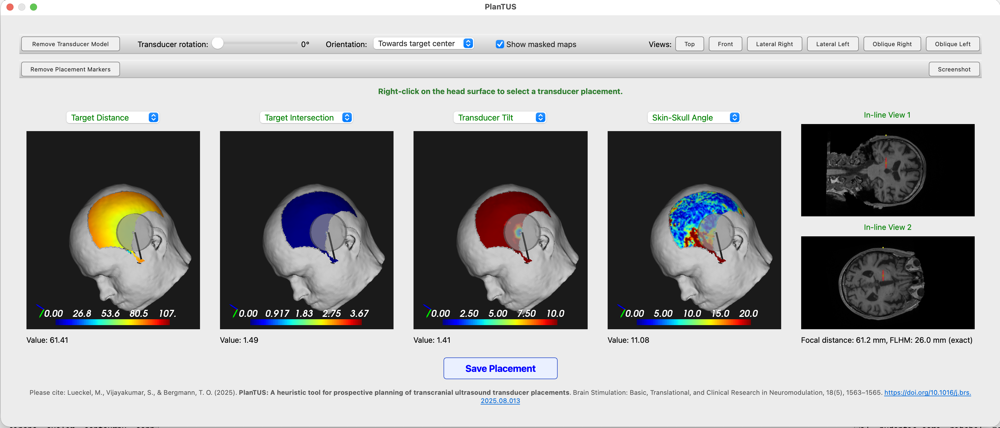
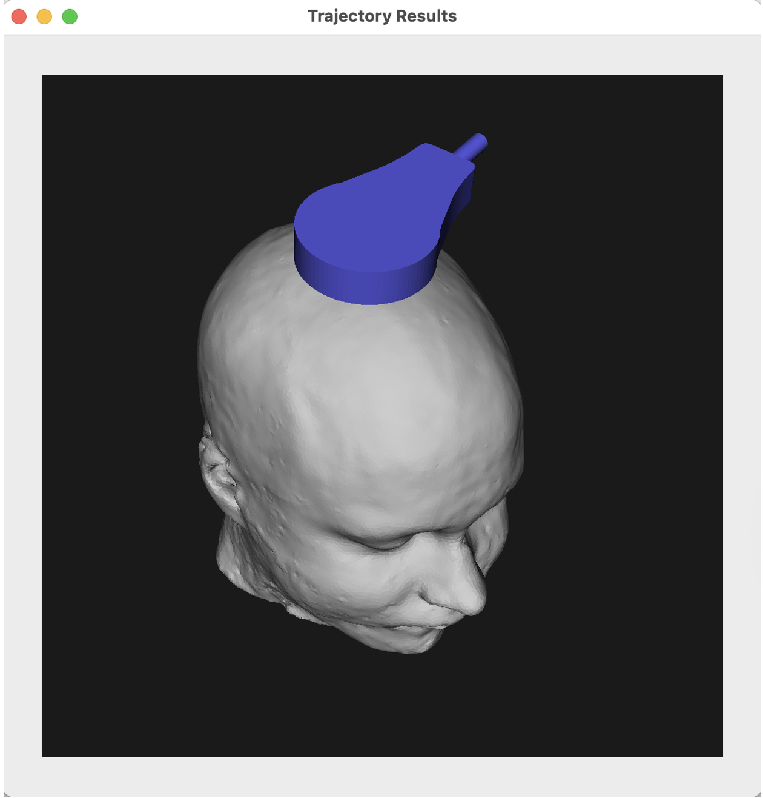
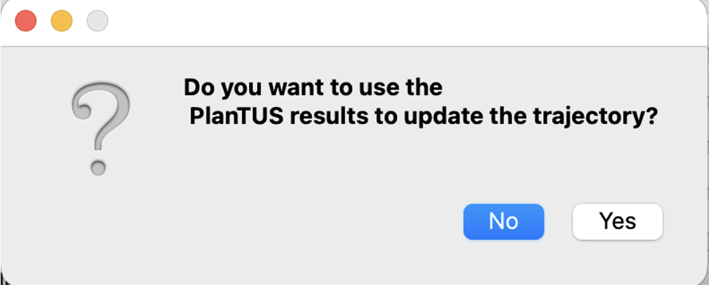
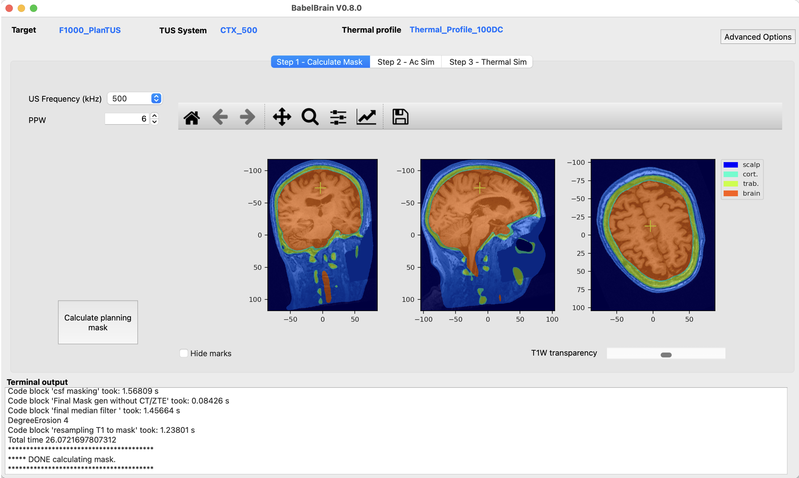

PlanTUS integration
BabelBrain integrates with the excellent tool PlanTUS developed by Maximilian Lueckel, Suhas Vijayakumar and Til Ole Bergmann from Mainz University that helps to refine trajectories using heatmaps of incident angles, distance, degree of intersection and skin-skull angle.

This procedure in BabelBrain can update the trajectory defined originally in 3DSlicer or Brainsight to improve, for example, incident angle.
PlanTUS works the best when a volume mask of a target ROI is provided as input. If no ROI is provided, a 3 mm diameter ROI will be generated at the original target generated in Brainsight or 3DSlicer.
Since version v0.8.8, a complete copy of the PlanTUS code is shipped with BabelBrain. If a user decides to use an updated version of PlanTUS, they can specied in the advanced dialog PlanTUS section.
Requirements
- Identify location path of SimNIBS - for example
/Users/spichardo/Applications/SimNIBS-4.6 - Add extra dependencies to SimNIBS enviroment - consult PlanTUS main page for details.
Execution of PlanTUS
- Ideally, have an ROI mask of your region of interest in the same space of the T1w file used for simulations. If no ROI is provided, a 3 mm diameter ROI will be generated at the original target generated in Brainsight or 3DSlicer.
- Define location in Brainsight/Slicer and export trajectory/linear transformation. Do not worry to adjust the trajectory manually as is usually done, as we expect to use the one calculated with PlanTUS. Just focus on the target location.

-
Specify paths to tools in the Advanced Dialog

-
These paths will remain saved between BabelBrain sessions.
-
Click on
RUN PlanTUSbutton. Execution will take only a couple of minutes. If all paths are correctly set, a multiple view window will show different heatmaps as below:

-
All views are linked to inspect all heatmaps simultaneously.
-
Use right click action on mouse/trackpad and select a feasible location on the head’s surface. For example, one that minimizes incident angle.
-
Click on
Save Placementand confirm to use this location for BabelBrain. -
A visualization of the transducer at the selected location will be shown

- When closing this window, a prompt will appear asking to update the target definition

- When running Step 1 in BabelBrain, you will see the new trajectory is the one selected with PlanTUS.

- This trajectory will be saved in the same directory as the original with the “_PlanTUS” suffix added in the filename